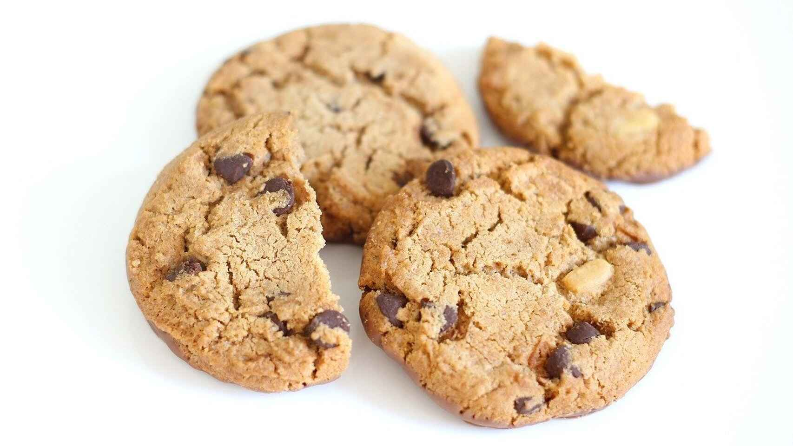

Cookies

Description
A cookie is a baked or cooked snack or dessert that is typically small, flat and sweet. It usually contains flour, sugar, egg, and some type of oil, fat, or butter. It may include other ingredients such as raisins, oats, chocolate chips, nuts, etc.
In most English-speaking countries except for the United States, crunchy cookies are called biscuits. Many Canadians also use this term. Chewier biscuits are sometimes called cookies even in the United Kingdom. Some cookies may also be named by their shape, such as date squares or bars.
Ingredients
- Flour
- Butter
- Sugar
- Baking soda
- Vanilla
Steps
- Preheat the oven to 180ºC.
- Beat the butter with the sugar until obtaining a mixture with a completely homogeneous cream texture.
- Add the sifted flour and baking soda (which is optional but highly recommended) tablespoon by tablespoon as we mix everything.
- We make balls and flatten them to shape cookies about 6 cm wide and 3 mm thick. Put them on parchment paper on a baking tray.
- Bake for 12 minutes at 180ºC with heat up and down. Be careful not to overdo it because each oven is different and if they are of different sizes they will need more or less time.
- Remove the cookies from the oven and let them cool on a wire rack for about 15 minutes.